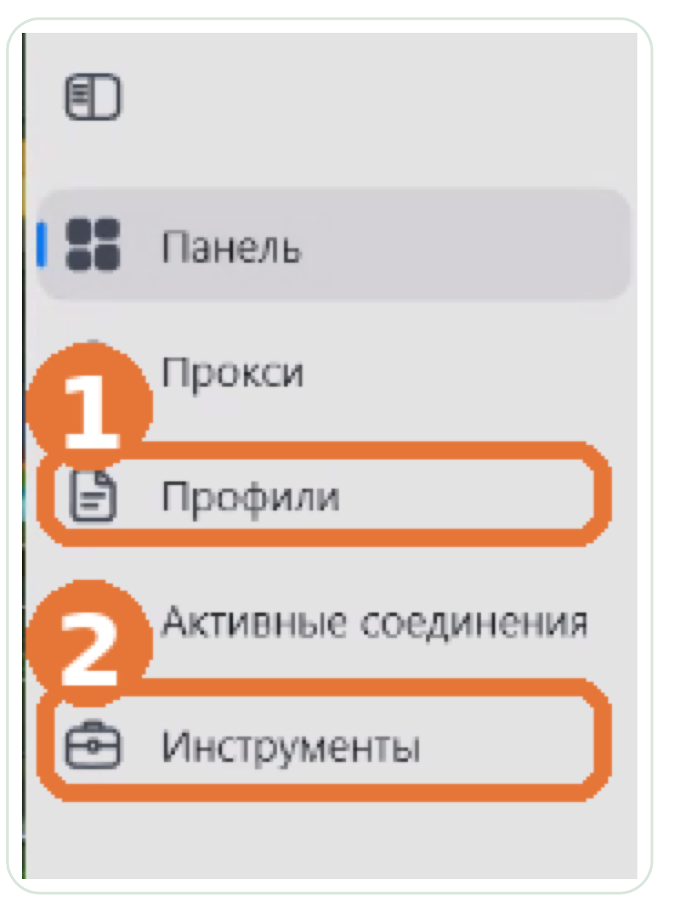
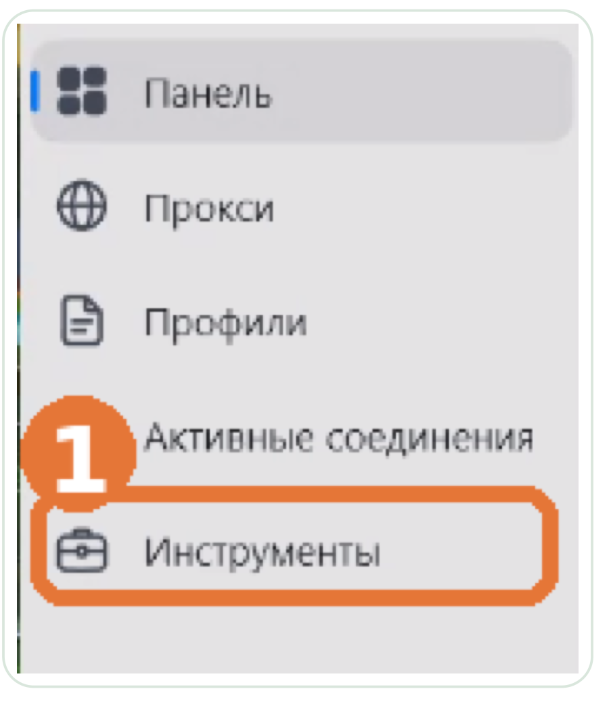
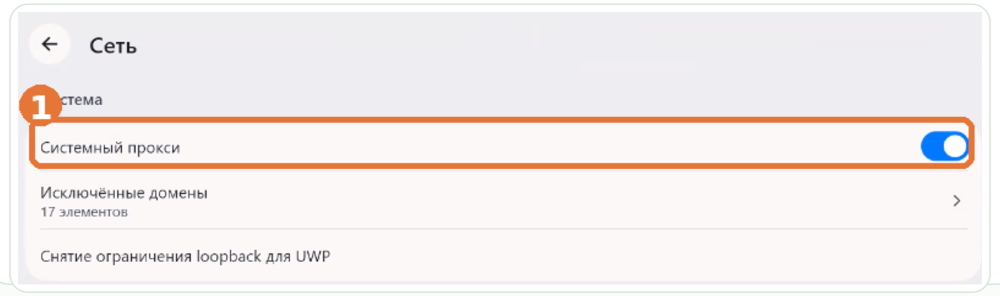

Google Chrome
Windows: Параметры → Приложения → Приложения по умолчанию → Google Chrome → «Использовать по умолчанию».
Sirius VPN + Happ
- Нажмите «Запустить» / Start.
- Выберите и оплатите тариф в официальном боте.
- Откройте «Настроить VPN».
Если скачиваете через телефон: отправьте ссылку себе в «Избранное», на почту или в другой мессенджер. Затем откройте её на компьютере.
📦 Скачать Happ для своего устройства
iPhone и iPad: скачать в App Store. Установите и откройте приложение.
Mac: скачать DMG для Intel и Apple Silicon. Откройте файл и перенесите Happ в «Программы».
Windows: скачать x64 для большинства компьютеров или ARM64 для ARM-компьютера. Откройте EXE и следуйте установщику. Тип системы: «Параметры» → «Система» → «О системе».
Android: скачать в Google Play или скачать APK с официального GitHub. При установке APK разрешите установку из этого источника. После установки отключите это разрешение.
Официальные сайты: happ.info · версия на русском · все версии и обновления на GitHub.
- Вернитесь в @siriusvpnbot.
- Откройте «Настроить VPN» или «Моя подписка» → «Мои конфигурации VPN».
- Скопируйте ссылку MAIN.
- В Happ нажмите «+» → «Добавить подписку» → «Импорт из буфера обмена».
- Дождитесь списка серверов и выберите один.
Если браузер работает через Happ, а другое приложение нет, включите режим TUN, если он есть в вашей версии.
- Выключите другие VPN.
- Убедитесь, что Happ подключён к выбранному серверу.
- Откройте ipinfo.io до подключения и после него.
- Проверьте, что IP и страна изменились, а нужный сайт открывается.
Виртуальная карта Zarub
Пример формата: 123 Main Street, New York, NY 10001, USA. Это только пример. Для оплаты используйте биллинг-адрес своей карты.
- Какой у карты биллинг-адрес.
- Можно ли сейчас оплатить Claude и ChatGPT.
- Какая комиссия за выпуск, пополнение и оплату.
- Откройте @zarub_robot → «Запустить».
- Пополните баланс и оформите виртуальную карту с биллинг-адресом США.
- Сохраните номер, срок действия, CVV и биллинг-адрес в менеджере паролей.
Получить готовый Claude с KYC
Windows: откройте «Параметры» → «Система» → «О системе». Для большинства компьютеров Intel/AMD нужна версия x64. ARM64 выбирайте только для ARM-компьютера.
macOS: откройте → «Об этом Mac». Для M1/M2/M3/M4 и новее укажите Apple Silicon, для процессора Intel укажите Intel.
Привет! Я с интенсива «ИИ-ВИЗАЦИЯ» по связкам. Хочу получить аккаунт Claude с пройденной проверкой личности. Подскажи, пожалуйста, когда будет готов доступ, что нужно от меня для начала и как оплатить. Если решу оформить Max через тебя, скажи цену на один месяц. Пришли, пожалуйста, доступ к специальной почте, контрольный IP и название рабочего сервера. Моя система: Windows 10/11 или macOS. Процессор: Intel/AMD x64, Windows ARM64, Apple Silicon (M1/M2/M3/M4 и новее) или Intel.
- Аккаунт Free с пройденной проверкой личности.
- Логин и пароль от специальной почты.
- Контрольный IP и название рабочего сервера.
- Цена Max и порядок продления, если оформляете подписку.
- Контакт для помощи.
Доступ, оплата и блокировки
01. Аккаунт и проверка личности
Что вы получаете?
Аккаунт Free с уже пройденной проверкой личности. После входа не ищите отдельную отметку KYC: её может не быть в интерфейсе.
Может ли Claude запросить проверку снова?
Да. На аккаунтах нашего специалиста этого не было, но у его коллег были такие случаи.
Где инструкции для двух вариантов Claude?
Для основного сайта и портала Anthropic. В инструкциях показано, как получить sessionKey. Это ключ доступа к аккаунту: не публикуйте его и не отправляйте в общий чат.
Что делать, если аккаунт заблокировали?
Напишите нашему специалисту. Он может дать текст для апелляции. По его оценке, шанс восстановления около 10%. Не создавайте новый аккаунт до ответа.
02. Прокси и FlClash
Где купить и продлить прокси?
На proxys.world или geekproxy.io. Это можно сделать самостоятельно.
Что делать, если прокси перестал работать?
Напишите в поддержку сервиса, где покупали. Проверьте срок действия и выбранный сервер.
Выдают ли файлы настроек?
ZIP и YAML больше не входят в комплект. Для самостоятельной настройки используйте актуальную инструкцию нашего специалиста. Не берите файлы от чужого аккаунта.
Нужно ли обновлять FlClash?
Да, лучше использовать свежую версию с официальной страницы. Названия кнопок на скриншотах могут немного отличаться.
03. Оплата и продление
Что входит в комплект?
Зависит от заказа. Базово наш специалист продаёт аккаунт Free с проверкой личности. Max, прокси и помощь могут входить в другие варианты. Перед оплатой уточните цену и состав.
Как продлить Claude через нашего специалиста?
Подписка оформляется на один месяц через iOS или Android, поэтому цена может быть выше, чем на сайте. Оплата через СБП или USDT. Сумму уточняйте перед каждым продлением.
Можно ли платить своей картой Zarub?
Наш специалист не гарантирует, что она подойдёт, и не даёт инструкции по смене карты. Вы действуете самостоятельно и принимаете риск.
Что делать при оплате нескольких аккаунтов?
Наш специалист использует отдельную карту для каждого аккаунта и рекомендует делать так же.
Когда заработает автоматическая выдача?
Наш специалист готовит выдачу и проверку через бота. Пока дождитесь подтверждения от него.
04. Поддержка и сроки
Куда писать и когда отвечают?
@Claude5x20x. С 9:30 до 00:00 по московскому времени.
Сколько ждать?
Простая проверка личности может занять 10–15 минут. При большой очереди аккаунт с подпиской могут готовить несколько часов.
Что прислать при проблеме?
Опишите, что произошло, и пришлите скриншот без паролей, ключей и данных карты.
Чего не делать до ответа?
Ничего не меняйте, не открывайте ссылки проверки и не пробуйте пройти KYC самостоятельно. Если уже открыли ссылку, напишите нашему специалисту: попробовать всё равно можно.
Настроить специальную программу FlClash
Windows: для большинства компьютеров Intel/AMD выберите x64. Для ARM-компьютера выберите ARM64. Запустите EXE и разрешите установку.
macOS: откройте → «Об этом Mac». Для M1/M2/M3/M4 и новее выберите Apple Silicon, для Intel выберите Intel. Откройте DMG и перенесите FlClash в «Программы».
Если система просит разрешить Helper или VPN, подтвердите.
- Распакуйте архив. Windows: правая кнопка → «Извлечь всё». macOS: нажмите архив дважды.
- В FlClash откройте «Профили» → «+» → «Файл».
- Для Windows выберите FlClash-RU-Direct-Windows.yaml.
- Для macOS выберите FlClash-RU-Direct-macOS.yaml.
- Нажмите на карточку нового профиля, чтобы выбрать его.

Раздел «Профили». Нажмите изображение для увеличения.


- TUN: ВКЛ.
- Режим стека: gvisor.
- Системный прокси: ВКЛ.
- Исходящий интерфейс: не менять.

- В блоке TUN нажмите «+ Добавить параметр» → «MTU».
- Введите 1400 и сохраните.
- «Обходить частные адреса»: ВЫКЛ.
- На Windows включите «Строгая маршрутизация» / Strict route.
- На Mac включите «Автонастройка системного DNS». Маршруты и исключения оставьте пустыми.

- Откройте «Общие» → «Ядро». Включите IPv6. Выключите «Добавлять системный DNS» и «Разрешить LAN».
- В разделах DNS и «Сниффер» список «Переопределяемые параметры» должен быть пустым.
- Не добавляйте свои правила в файл настроек.
- В Chrome откройте «Настройки» → «Конфиденциальность и безопасность» → «Безопасность». Выключите «Использовать безопасный DNS». Если такого пункта нет, пропустите этот шаг.
Если сервер не выбран, откройте «Прокси» и выберите рабочий сервер из сообщения специалиста. Не выбирайте «Глобально», чтобы российские сайты открывались напрямую.

- Перезапустите браузер и откройте api.ipify.org.
- Сравните IP с адресом из сообщения специалиста.
- Во FlClash откройте «Активные соединения» и выключите фильтр «Только прокси».
- Откройте сайты ещё раз. Для claude.ai и api.ipify.org должно быть PROXY. Для vk.com и yandex.ru должно быть DIRECT.
Войти в Claude и проверить тариф Max
- Включите FlClash по шагу 05.
- В отдельном профиле Chrome откройте специальную почту по данным из комплекта.
- В этом же профиле откройте claude.ai и используйте выданные данные для входа.
- Если Claude прислал ссылку для входа на специальную почту, скопируйте адрес ссылки, вставьте его в адресную строку отдельного профиля Chrome и нажмите Enter.
Если видите Free или просьбу оплатить подписку, не вводите карту сразу. Сначала уточните у специалиста цену Max и порядок оплаты.
Не меняйте без необходимости страну, сервер и карту. Используйте один аккаунт. Сначала включайте FlClash, потом открывайте Claude. Перед выключением FlClash закройте все вкладки и приложение Claude.
Оплата Claude через месяц
Вариант 2: оплатить через @Claude5x20x. Подписка оформляется на один месяц через iOS или Android, поэтому цена может быть выше, чем на сайте. Заранее уточните сумму и оплатите через СБП или USDT. Дождитесь подтверждения продления.
Регистрация ChatGPT и Codex
- Включите Sirius/Happ. Если уже работаете через FlClash, не включайте Happ поверх него.
- В отдельном профиле Chrome откройте chatgpt.com.
- Войдите со своей почтой или создайте аккаунт.
📱 Если попросили код из SMS
Выберите один сервис и страну США. В списке сервисов укажите OpenAI / ChatGPT.
hero-sms: hero-sms.com — разовый номер.
5sim: 5sim.net — разовый номер.
mobilesms.io: mobilesms.io — номер США на месяц, выберите Physical / Non-VoIP.
Код появится в личном кабинете выбранного сервиса. Не используйте один разовый номер для двух аккаунтов.
- Откройте «Settings» → «Subscription» → «Upgrade».
- Выберите Plus за $20/мес или Pro от $100/мес. Цены можно проверить на официальной странице.
- Введите данные и биллинг-адрес карты из шага 03.
- Откройте «Settings» → «Subscription» и проверьте, что тариф активен.